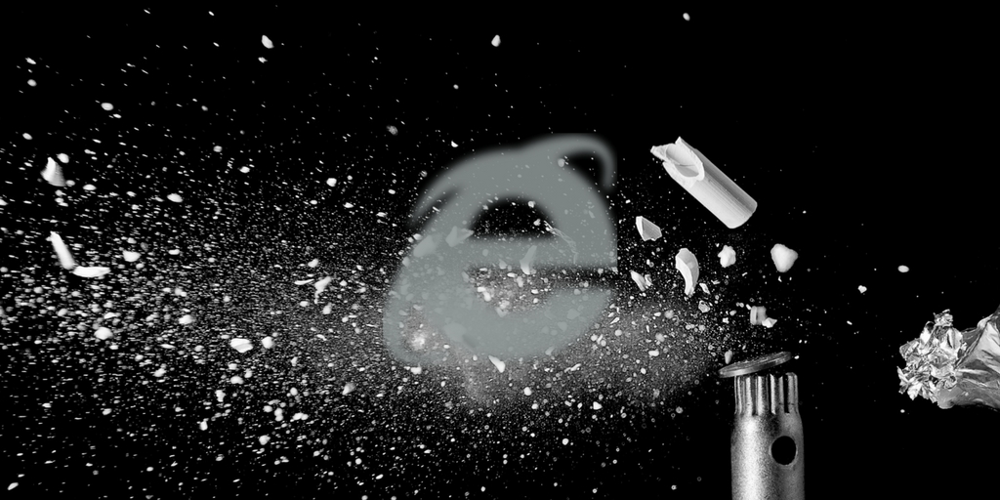

Win7のIE11でdlの中にあるフォームをTabキーで移動すると表示がバグる

詳しくはGitHub - arm-band/bugged_form-win7_ie11: テストフォーム（Win7 IE11バグ確認用）を参照。
- Windows7
- Internet Explorer 11 (11.0.9600.18617)
において、
- dl,dt,ddの子要素にフォームの部品があるフォーム
で、上から順番にTabでフォーカスを移動させると、ラジオボタンの直後のテキストボックスの表示がおかしくなる現象の検証用のフォームです。
なお、当現象はWin10のIE11や、他のブラウザでは発生しませんでした。